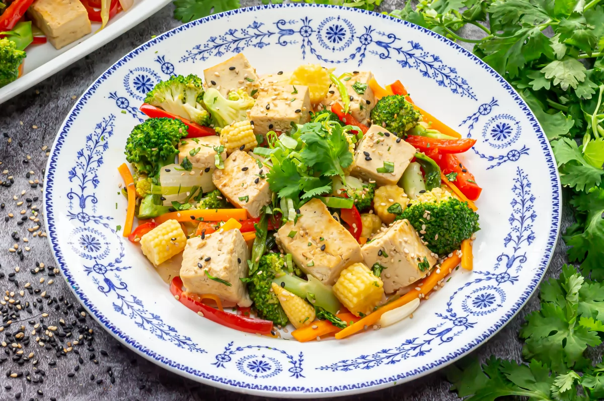
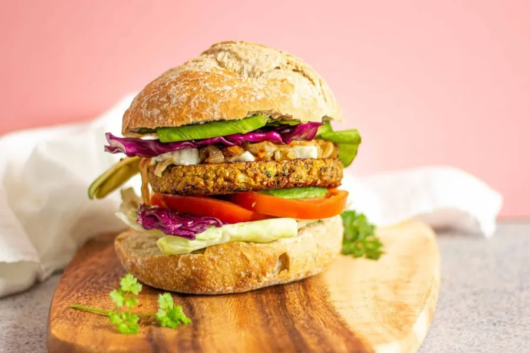

MUNDO VEGAN
ENSALADA DE LENTEJAS

Ingredientes:
- 100 gr. de lentejas (½ taza)
- 1 tomate.
- 1 cebolla morada.
- 2 pimientos.
- 1 zanahoria.
- 1 rama de apio
- Kale o acelga.
- 2 limones .
- 1 cucharada de aceite de oliva.
- Sal y pimienta al gusto.
Como cocinar las lentejas:
- Colocar las lentejas en remojo unas horas antes de comenzar su cocción.
- Pasado el tiempo retirar el agua y colocarlas en una olla al fuego en agua limpia con un poco de sal, en este momento se puede incluir orégano u hojas de laurel al agua. Cocinar por 15 minutos, no deben quedar muy blandas.
- Pasado el tiempo escurrir el agua y dejar que las lentejas se enfríen y sequen.
Preparar la vinagreta para ensalada:
- En un recipiente colocar el jugo de los dos limones. Arriba incorporar 1 cdita. de aceite de oliva, pimienta y ½ cdita. de sal.
- Mezclar e integrar todo, por último agregar la cebolla bien picada y una ramita de cilantro. Dejar en reposo.
Cómo hacer ensalada de lentejas paso a paso:
- Rallar la zanahoria, picar los demás ingredientes y colocarlos en un recipiente amplio.
- Arriba de las verduras picadas agregar las lentejas cocidas y secas. Remover.
- Por último agregar la vinagreta con cebolla. Mezclar bien y servir.
TOFU CON VERDURAS
Ingredientes:
- 500 g de tofu firme para cocinar cortado en cubos
- 1 cabeza de brócoli cortada en ramilletes
- 1 o 2 zanahorias en juliana
- 1 pimiento rojo en juliana
- 8 mazorquitas de maíz troceadas
- 1 cebolleta grande troceada
- El verde de la cebolleta cortado en tiras
- 4 cucharadas de aceite de oliva virgen extra
- Cilantro fresco picado
- Semillas de sésamo
- Sal y pimienta negra al gusto
Para la marinada:
- 3 cucharadas de salsa de soja
- 3 cucharadas de mirin (vino de cocina japonés) o vino blanco
- 2 cucharaditas de jengibre en polvo
- 2 cucharaditas de ajo en polvo
Cómo hacer el tofu paso a paso:
- En un bol, mezclar los ingredientes de la marinada (soja, mirin, ajo y jengibre) con el tofu. Dejar marinar al menos 20 minutos, aunque si tienes tiempo puedes dejarlo un par de horas o incluso de un día para otro para que se impregne bien de los sabores.
- Revisar el brócoli. Si hay ramilletes muy grandes cortarlos en mitades o cuartos. Cocer el brócoli al vapor o en agua hirviendo salada unos 4 o 5 minutos. Escurrir y reservar.
- En una sartén grande, calentar 3 cucharadas de aceite de oliva a fuego medio-alto y, cuando esté caliente, saltear unos 5 o 6 minutos la cebolleta junto con el pimiento y la zanahoria. Remover con frecuencia para que no se quemen. No queremos que se hagan demasiado estas verduras, que queden cocinadas pero firmes.
- Añadir ahora el brócoli a la sartén junto con las mazorquitas troceadas. Saltear un par de minutos. Salpimentar, retirar de la sartén y reservar.
- Escurrir el tofu reservando la marinada. En la misma sartén de las verduras (y sin limpiarla), volvemos a calentar una cucharada de aceite y cuando esté caliente, doramos el tofu por todos lados. Remover con cuidado para que no se rompa. Una vez dorado, incorporamos el verde de cebolleta
- Agregamos las verduras de nuevo a la sartén junto con el resto de la marinada. Mezclar bien y saltear un par de minutos más para integrar sabores. Servir espolvoreado con cilantro y semillas de sésamo.
HAMBURGUESA DE GARBANZOS
Ingredientes:
- 200 gramos de garbanzos cocidos.
- 1/4 de cebolla.
- 1 ajo.
- 4 champiñones.
- 2 cucharadas soperas de harina de garbanzo.
- Extra de harina o pan rallado para rebozar.
- Una pizca de perejil.
- Pimentón dulce.
- 1 cucharada de aceite de oliva.
- Sal, Orégano y pimienta al gusto.
Cómo preparar las hamburguesas paso a paso:
- Picamos la cebolla, el ajo y los champiñones.
- Introducimos los vegetales en la sartén junto un chorrito de aceite de oliva y salteamos.
- Picamos finamente el perejil y lo incorporamos en la sartén. Mezclamos y mantenemos a fuego medio hasta dorar.
- Apagamos el fuego y reservamos.
- Volcamos los garbanzos en un bol y agregamos las especias al gusto: abundante pimentón dulce, una pizca de pimienta, sal y orégano.
- Trituramos los garbanzos con la batidora hasta conseguir una masa cremosa y homogénea. Probamos y, si fuera necesario, salpimentamos más.
- A continuación añadimos el salteado y mezclamos.
- Para dar más densidad y facilitar la manipulación de las hamburguesas, añadimos dos cucharadas soperas de harina. Yo recomiendo que sea harina de garbanzo, pero puede ser de otro tipo. Si son tus primeras hamburguesas vegetales caseras, te recomiendo que añadas una cucharada más, porque así te será más fácil manipularla y darle forma después.
- Preparamos un plato con pan rallado o harina, para rebozar.
- Cogemos una porción de masa y le damos forma de hamburguesa. Lo colocamos encima del pan rallado y rebozamos por todos los costados, presionando ligeramente y damos forma con cuidado.
- Repetimos el proceso hasta terminar con la masa (saldrán unas 2 o 3 hamburguesas medianas).
- Si no tienes mucha práctica haciendo hamburguesas, te recomiendo que una vez tengas las hamburguesas hechas, las metas unos 10 o 15 minutos en el congelador para que la hamburguesa coja textura y sea más fácil saltearla.
- Colocamos en una fuente nuestras hamburguesas y al horno, sacar cuando esten doradas
BUEN PROVECHO
Tenemos opciones:
- Vegetarianas
- Veganas
- Postres